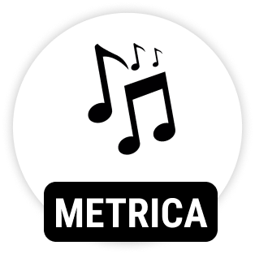
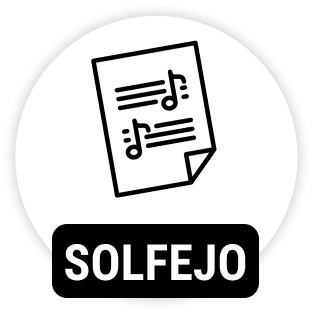
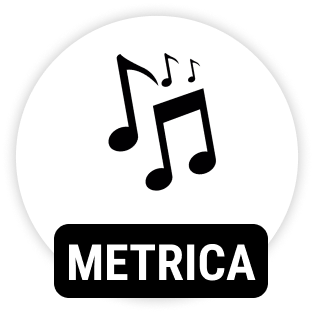
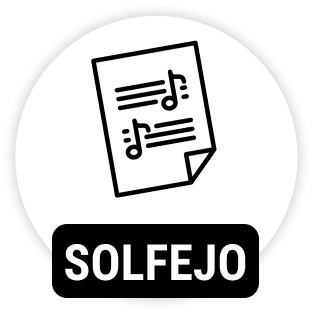

Com uma linguagem simples e direta a metodologia do curso de violão da Carioca Music foi construída. Nossa metodologia não tem fronteiras, aborda técnicas do violão popular e clássico garantindo ao aluno uma formação ampla e sólida.
Dentro da nossa proposta inovadora as técnicas serão acrescentadas diretamente aos gêneros de cada atividade. Toque simples, duplo, flam, drag, slide, rulos, são algumas das técnicas que veremos ao longo de nosso curso, para que você tenha total domínio de seu instrumento.
O aluno desenvolve desde os princípios básicos na guitarra, coordenação motora, digitação, palhetada, ritmo, acordes, power chords e iniciação a leitura de tablatura e partitura. Desenvolvimento das técnicas de guitarra, conhecimento das escalas, arpejos, formação de acordes e improvisação.
Em nossas aulas de canto abordaremos fisiologia, voz, interpretação, dicção, articulação,técnicas variadas objetivando uma preparação para uma carreira solo ou em grupos. Com aulas e técnicas para cada estilo que você usa ou irá adotar.

Desenvolvemos princípios básicos para um melhor aprendizado, para que o aluno venha de fato conhecer seu instrumento com propriedade. Na metodologia do contrabaixo estudaremos partes do contrabaixo, afinação,escalas,formação de acordes, exercícios de aquecimento, cifras, partituras, improvisação e muito mais.
A Capivara Music desenvolveu uma metodologia própria para seus alunos. O material didático foi criado para abranger os principais conceitos práticos e teóricos do instrumento escolhido, abordando pontos como a leitura rítmica, métrica, solfejo, e toda a parte de percepção. Este material didático foi pensado para o aluno tocar ou cantar de verdade em pouco tempo de estudo.
 


